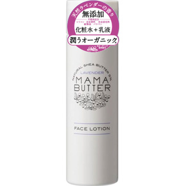

返回列表
产品名称：ママバター フェイスローション

ビーバイイー ママバター フェイスローション ２００ＭＬ
メーカー ビーバイイー
JANコード 4560278233518
商品の特徴
化粧水と乳液がこれ１本で時短スキンケアできます。
- 成分・分量
- ＜成分＞
水、グリセリン、シア脂、オリーブ油、ホホバ種子油、コケモモ種子油、ヨーロッパキイチゴ種子油、キイチゴ果汁、カニナバラ果実エキス、タチジャコウソウ花／葉エキス、ラベンダー花エキス、キイチゴエキス、ローズマリー葉エキス、BG、カプリリルグリコール、ステアリン酸、バチルアルコール、（アクリレーツ／アクリル酸アルキル（C10-30））クロスポリマー、アルギニン、トリ酢酸テトラステアリン酸スクロース、水添レシチン、キサンタンガム、グルコン酸Na、トリ（カプリル酸／カプリン酸）グリセリル、ジラウロイルグル
- 用法及び用量
- ・よく振ってから500円硬貨程度の量を手に取り、手のひらで顔を包み込むようにやさしく肌に馴染ませます。